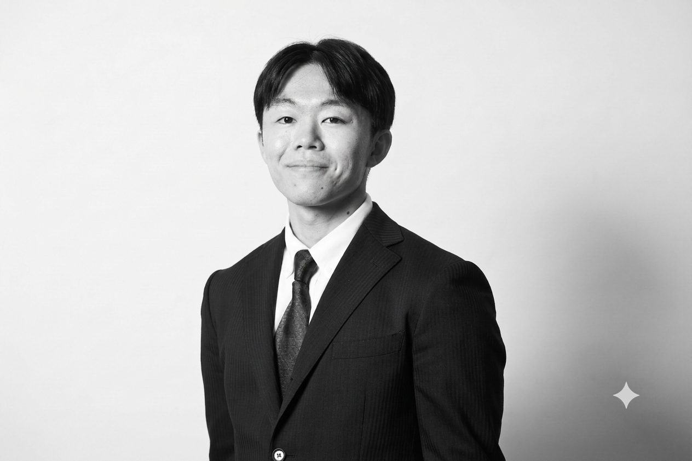

FOUNDERS

橋本 嘉永
CO-FOUNDER
日英バイリンガル。日本のフランチャイズ企業との交渉、契約プロセスの管理、両国間のコミュニケーション全般を担当。日本市場の商習慣と文化的背景を深く理解し、円滑な合意形成を実現します。
Yoshinaga Hashimoto
CO-FOUNDER
Bilingual in Japanese and English. Leads negotiations with Japanese franchise companies, manages the contract process, and handles all cross-border communication. Deep understanding of Japanese business culture enables smooth consensus-building.

Ethan Manus
CO-FOUNDER
フィリピンのビジネスネットワークにおける深いコネクションを保有。SM Mallsの経営層との直接的な関係を通じて、日本フランチャイズブランドのフィリピン進出に不可欠なパイプラインを提供します。
Ethan Manus
CO-FOUNDER
Holds deep connections within the Philippine business network. Through a direct relationship with SM Malls' top management, provides the essential pipeline for Japanese franchise brands entering the Philippine market.